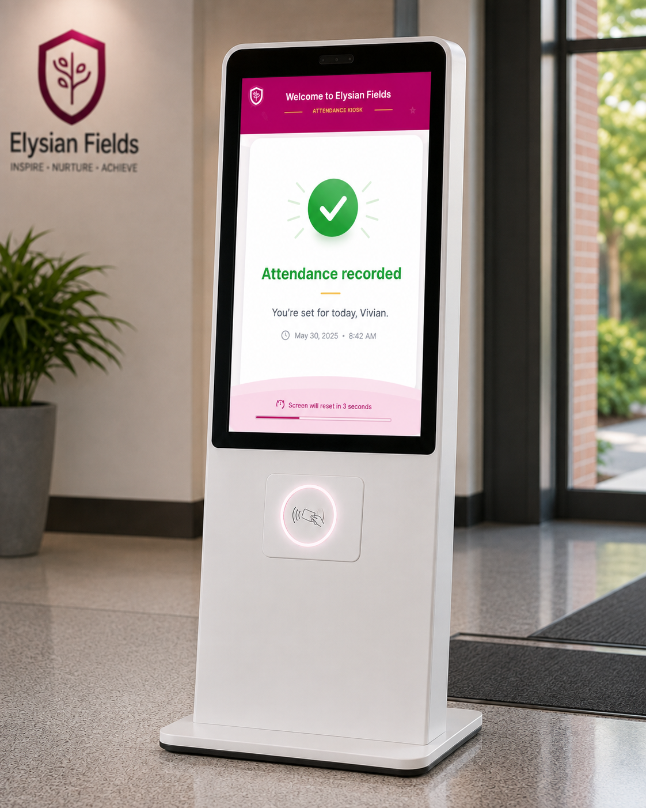

Automated attendance kiosk for teachers and administrators.
UX Research Case Study
Elysian Fields Attendance Kiosk
An automated attendance kiosk designed to reduce morning clock-in friction through clear hierarchy, accessible identification, and a more reliable arrival workflow for teachers and administrators.

Project Overview
Designing around the real workflow
The project took approximately eight months and was led through a research-first process focused on cognitive behaviour, participant interviews, workflow analysis, and translating findings into the final kiosk interface.
Approximately 8 months.
Lead Researcher & Designer — research-led.
Cognitive research, interviews, workflow analysis and high-fidelity design.
The problem
A manual paper attendance book forced teachers to remember and enter arrival times later. Delayed recall created inaccurate data, forgotten entries, and additional administrative friction.
The goal
Identify the real friction points and replace unreliable memory-based attendance tracking with an accessible, intuitive kiosk tailored to the arrival environment.
Understanding the User
Research changed the direction of the product
Structured interviews with five key participants mapped the existing workflow, behavioural friction, and the conditions in which attendance was actually recorded.
Initial hypothesis
I assumed users were generally dissatisfied with the current attendance system and wanted the entire workflow replaced.
What the research showed
Users were comfortable with the familiar routine. The critical failure was inaccurate data caused by delayed logging and reliance on memory.
Research pain points
1
Delayed memory-based logging
Teachers often remembered attendance later in the day, producing inaccurate times, forgotten entries, and retroactive corrections.
2
The system missed the natural entry path
The paper book did not intercept the user during arrival. Busy educators could completely forget to sign in during hectic morning routines.
Persona: Vivian
Vivian represents a busy early childhood educator working in a high-distraction morning environment.

User journey map
Mapping Vivian’s arrival exposed the real design opportunity: attendance needed to become part of the physical arrival path rather than another task to remember.

Starting the Design
The first concept started as a mobile attendance app
Early mobile concepts explored a simple digital attendance flow. The goal was to give staff a quick way to identify themselves, view their arrival time, and confirm attendance with minimal interaction. Usability testing later revealed that the mobile format introduced unnecessary cognitive and practical friction, which ultimately shifted the solution toward an RFID-enabled kiosk.
Early mobile concept — Clock-in state

The initial clock-in state focused on three pieces of information: user identity, arrival time, and one clear primary action. The intention was to simplify the paper attendance process into a quick digital confirmation.
Early mobile concept — Confirmation state

The confirmation state provided immediate feedback after clocking in. Vivian’s identity, timestamp, and success message reassured the user that attendance had been recorded before the interface returned to its default state.
Usability Study
Testing disproved the mobile-app direction
An unmoderated Maze study was conducted with the same five participants. Think-aloud audio captured task paths, cognitive friction, and immediate behavioural reactions.
A significant portion of the target group did not actively rely on smartphones during working hours, creating an immediate adoption barrier.
Locating a phone, opening an app, and navigating a login flow added steps during an already high-stress morning routine.
The confirmation target was too small and the interface lacked a strong information hierarchy, leading to unnecessary frustration.
Refining the Design
Small visual changes addressed real behavioural problems
Making the RFID interaction obvious
Illuminating circles were added as a pre-attentive visual anchor, helping users immediately understand where to interact when approaching the kiosk.

Adding closure to the confirmation state
Users felt the transition back to the home screen was too sudden. A reset notification made the exit predictable while keeping the kiosk ready for the next person.

Final interface states
The final kiosk interface supports a visible RFID state, clear arrival confirmation, and a manual PIN fallback path for users who cannot use their card.

Accessibility
Accessibility considerations shaped the interaction
Accessibility was considered across visual perception, motor precision, cognitive load, processing time, and system feedback rather than being treated as a final visual check.
1
Visual accessibility & color contrast
- High contrast supports users with low vision and color vision deficiencies.
- Key information such as the user’s name and arrival time was enlarged so it could be read from a distance and in different lighting conditions.
2
Cognitive load & motor precision
- RFID proximity interaction removes the fine motor precision required by small smartphone touch targets.
- A multi-step login flow was reduced to a single-action physical trigger, supporting users experiencing stress or cognitive fatigue during morning transitions.
3
System transparency & temporal constraints
- The reset notification gives users additional time to verify the success state before the screen changes.
- Visual cues can be reinforced with secondary haptic or audio confirmation to support users with visual impairments or users looking away while tapping their badge.
Going Forward
Takeaways
Impact
“True UX maturity means designing for the user’s environment, not just the screen.”
Testing disproved the mobile concept, so rather than patching the interface, the project moved to the larger system problem. The result was a shift from a digital chore to a physical intervention embedded in the user’s natural arrival environment.
What I learned
This project changed how I define a successful interface. Sometimes the strongest user experience is the one that requires the least attention to a screen.
Next Steps
Where I would take the project next
Interested in accessible, context-aware design?
Let’s connect to discuss UX research, interaction design, and human-centred product work.